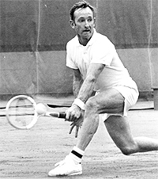
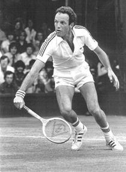
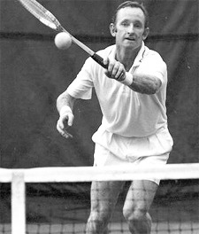
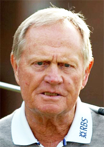
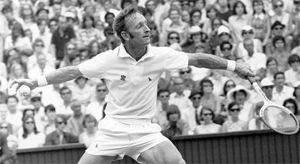
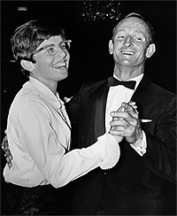

← Bài trước: Resistance Points and Breakthrough Points | 🏠 Mental Game Trang chủ | Bài tiếp: → Self Belief
Rod Laver và Phong cách "Mean Streak"
Thư viện kiến thức quần vợt thống nhất — Cơ bản, Phân tích kỹ thuật, Thư viện tham khảo và nhiều hơn nữa
Rod Laver và Phong cách "Mean Streak"
Jeff McCullough

Người đã tung ra hàng triệu cú trái tay.
Khoảng 11:00 đêm một tối mùa đông ấm áp. Tôi đang ngồi trên ghế cửa sổ của chuyến bay đêm từ San Diego đến Chicago, kết nối đến Washington D.C. Những hành khách mệt mỏi đang tranh giành chỗ để đựng hành lý. Tôi đang mong chờ chuyến bay cất cánh để có thể uống một ly nước.
Sau đó, tôi ngạc nhiên khi thấy một khuôn mặt xuất hiện đột ngột, khuôn mặt của một trong những anh hùng thời thơ ấu của tôi, một khuôn mặt đã tung ra hàng triệu cú trái tay có xoáy cuộn. Tôi có thực sự đang cùng một chiếc máy bay với một trong những tay vợt tennis vĩ đại nhất mọi thời đại không?
Tôi ngắm nhìn như bị mê hoặc khi Rod "The Rocket" Laver đặt hành lý và túi vợt của mình vào một chỗ đựng hành lý trống cách tôi khoảng 15 feet.
Không ai nhận ra anh ta, và thực sự, anh ta trông khá bình thường. Nhìn lại bây giờ, không có gì lạ khi một nhân viên an ninh đã từ chối cho Rocket được vào một trận đấu từ thiện tại Indian Wells.
Anh ta có vẻ buồn bã và mệt mỏi, và tôi tự hỏi Rod Laver đang đi đâu vào lúc 11:13 đêm thứ Năm trên chuyến bay thương gia.
Cú đánh lỡ
Nhiều năm trước, tôi đã thấy một biểu cảm tương tự trên khuôn mặt khắc nghiệt, khắc khoải này. Đây là sự kiện kinh hoàng nhất tôi từng chứng kiến trên sân tennis.

Tom Okker: một phần của điểm tennis kỳ lạ nhất tôi từng chứng kiến.
Trận đấu là trận đấu World Team Tennis chống lại Tom Okker của Hà Lan tại Oakland vào năm 1975. Cả Rocket, lúc đó 36 tuổi, và Dutchman Flying, lúc đó 34 tuổi, vẫn có thể chơi tennis giao bóng và bắt lưới tuyệt vời, đặc biệt là trong điều kiện nội thất hoàn hảo trên một sân đất nhanh, có độ nảy thấp.
Trận đấu một set khá căng thẳng. Laver giữ điểm giao bóng ở 5-6 để đưa trận đấu vào loạt tie-breaker. Đây là những ngày của loạt tie-breaker ban đầu 9 điểm với người đầu tiên giành được 5 điểm thắng. Khán giả hào hứng trở nên ồn ào hơn khi điểm số tiến triển đến 3-3, và sau đó đến 4-4, chỉ còn một điểm quyết định.
Laver cắt một cú giao bóng trái khó chịu ở giữa sân để trả lại cú trái tay của Okker, và theo vào lưới. Okker đánh một cú đánh lưới ngắn xuống giữa sân để đánh vào cú bắt lưới của Laver, nhưng cú đánh của anh ta hơi cao. Okker chạy để che góc trái tay của mình nhưng Laver lừa anh ta, đánh một cú bắt lưới mạnh mẽ phía sau anh ta vào góc thuận tay của Okker.
Chỉ vừa đủ chạm vào bóng, Okker có thể ném lên một cú đánh lưới ngắn, thấp. Và đó là Rod, chỉ cách lưới khoảng 4 hoặc 5 feet, sẵn sàng đánh bóng vào tận cùng của thế giới.
Rod đánh thật mạnh. Bóng đánh vào khung của anh ta và bay lên xoay cuộn điên cuồng vào tầng trên của sân vận động Oakland.
Khán giả bị sốc. Điều này có thể xảy ra không? Một tiếng rên vang lên khắp sân vận động. Một trong những vĩ đại nhất mọi thời đại vừa đánh lỡ một cú đánh dễ nhất mọi thời đại.
Rod lập tức cúi đầu, nhẹ nhàng với bản thân. Tôi thấy một biểu cảm mờ đục, đau đớn và bất ngờ trong mắt anh ta.

Làm thế nào một nhà vô địch Grand Slam hai lần có thể đánh lỡ cú đánh dễ nhất mọi thời đại?
Qua nhiều năm, điểm đó trở nên đặc biệt quan trọng đối với tôi. Nó thể hiện rất tốt bí ẩn của môn thể thao này và những thách thức về tinh thần. Bất cứ điều gì cũng có thể xảy ra ngoài đó với bất kỳ tay vợt nào vào bất kỳ thời điểm nào.
Tôi sẽ kể câu chuyện "Laver" cho học viên của mình bất cứ khi nào một trong số họ đánh lỡ một cú đánh dễ dàng trên một điểm lớn. "Nếu nó có thể xảy ra với 'Rocket', nó có thể xảy ra với bạn. Vậy hãy nhẹ nhàng lên."
Tôi phải tự hỏi xem Laver có nhớ điểm đó không, và nếu nó có ý nghĩa đặc biệt đối với anh ta không.
Tôi nhớ lại một chuyến bay khác, đi xuống hành lang để chào hỏi Jack Nicklaus và nói với anh ta rằng đó là một vinh dự để gặp anh ta. Anh ta vô cùng lạnh nhạt và không quan tâm, nhưng sao nào? Nếu tôi có thể dám tự giới thiệu mình với Laver, tôi có thể tuyên bố mình là người duy nhất từng gặp cả người golf vĩ đại nhất thế giới và tay vợt tennis vĩ đại nhất thế giới, một cách ngẫu nhiên, trên những chiếc máy bay khác nhau.
Khi tôi đi lên hành lang, tôi có thể cảm thấy trái tim mình đang đập nhanh. "Xin chào Rod," tôi nói lịch sự, cố gắng nở một nụ cười. "Tôi là Jeff McCullough. Tôi chỉ muốn nói 'xin chào'."
Biểu cảm trên khuôn mặt Rod rất thân thiện khi chúng tôi bắt tay nhau. Để tôi rất vui, anh ta thực sự đánh giá cao việc được nhận ra và chào hỏi.
"Xin chào Jeff," anh ta nói bằng giọng nói đặc trưng của người Úc. Có, anh ta thực sự gọi tên tôi!
Sau đó, tôi đột ngột trở nên rất lo lắng đến nỗi tôi nghĩ trái tim mình sẽ nổ tung. Vậy nên tôi nói một cách tôn kính, "Chào Rod, tôi chỉ muốn nói 'xin chào'. Đó thực sự là một vinh dự để gặp bạn." Và tôi quay lại ghế của mình.

Jack Nicklaus: lạnh nhạt và không quan tâm nhưng sao nào?
Ngay lập tức tôi có một cảm giác hối hận mạnh mẽ - có lẽ tôi nên ở lại và nói chuyện với anh ta thêm. Sau tất cả, anh ta trông khá thân thiện và vui vẻ. Có lẽ anh ta thực sự buồn vì tôi không tiếp tục cuộc trò chuyện.
Sao mà hay được phỏng vấn độc quyền với vĩ đại Rod Laver giữa đêm khuya ở độ cao 30.000 feet?
Mặc dù tôi rất sợ hãi, nhưng tôi quyết tâm không để cơ hội này tan biến. Vậy nên tôi quay lại ghế của Rod.
"Rod," tôi nói, "Tôi không muốn xâm phạm quyền riêng tư của bạn, nhưng có một điều tôi thực sự muốn hỏi bạn - một điều tôi đã muốn biết trong nhiều năm."
Ngay lập tức tôi có thể thấy anh ta không hề hứng thú với câu hỏi của tôi. "Chúa ơi, đó lại là người đó," biểu cảm trên khuôn mặt của anh ta dường như nói.
Nhưng tôi kiên trì: "Bạn có thể chờ tôi bên ngoài máy bay sau khi chúng tôi hạ cánh không?"
"À... Tôi nghĩ vậy," anh ta than thở, quay đầu đi.
Dựa trên phản hồi đó, tôi quyết định rằng Rod Laver rất có thể không chờ tôi trong một sân bay vào giữa đêm. Nhưng bây giờ tôi đã cam kết hoàn toàn để thực hiện cuộc "phỏng vấn" này.
Khi chúng tôi hạ cánh, tôi lấy túi vợt cũ, phai màu của mình và đẩy mình qua hành lang ngay phía sau Rocket và những hành khách khác đang bị kẹt.

Một cơ hội vàng để phỏng vấn người vĩ đại nhất mọi thời đại.
Khi Rod xuất hiện từ máy bay tám phút sau đó, tôi là người đang chờ anh ta - không phải ngược lại.
"Bạn đã có thể ngủ trên rất nhiều máy bay trong suốt thời gian của mình," tôi nói bằng giọng nói tốt nhất của mình. Phản hồi của anh ta là một biểu cảm buồn ngủ và mệt mỏi.
"Bạn có thời gian cho một ly bia không?" tôi dám hỏi.
Anh ta nhìn tôi một góc mắt, lắc đầu một cách chán nản và vẫn không nói gì. Sự lịch sự của anh ta đã biến mất và Rod đột ngột di chuyển rất nhanh, tôi nhận ra chiến lược của anh ta là chạy trốn khỏi tôi.
Đám mây đen
"Lắng nghe Rod," tôi nói với lưng anh ta, "khi bạn đang ở đỉnh cao của mình vào những năm 60 và giành được tất cả những danh hiệu Grand Slam, bạn có tiếp cận các trận đấu với thái độ cố gắng giành chiến thắng thông qua sự kiên cường và sức mạnh ý chí, hay bạn chỉ cố gắng mang ra nỗ lực tốt nhất và chơi tốt nhất và để con số rơi vào đâu?" Bạn biết, cách mà các nhà tâm lý học thể thao khuyên?
Đột ngột, Rocket dừng lại. Vai anh ta căng lên, và anh ta quay đầu lại và nhìn tôi một cách khinh thường.

Có một đám mây đen làm khác biệt không?
"Nỗ lực tốt nhất?" anh ta nói với sự chán ghét dường như không thể giảm bớt. Sau đó anh ta quay lại và bật chế độ tăng tốc.
Nhìn thấy tôi đang ở phía sau, Rod bắt đầu nói từ một góc miệng. "Nỗ lực tốt nhất?" anh ta nói lại với sự tự tin tuyệt đối, "Nỗ lực tốt nhất không có ý nghĩa gì vì bạn có thể nỗ lực tốt nhất và vẫn thua."
"Chơi tốt và nỗ lực tốt nhất không có ý nghĩa gì đối với tôi. Chỉ có việc giành chiến thắng mới quan trọng."
"Tôi hoàn toàn được thúc đẩy bởi mong muốn giành chiến thắng. Tôi yêu thích việc giành chiến thắng và ghét việc thua - đối với bất kỳ trong những người đàn ông khác. "
"Và ngoài ra," anh ta tiếp tục với sự nhiệt tình hơn, "Tôi chỉ có thể hy vọng chơi tốt nhất khoảng 30 hoặc 40% thời gian. Tôi phải tìm cách giành chiến thắng trong những trận đấu mà tôi không chơi tốt nhất."
Là một học viên nhiệt tình của tâm lý học thể thao, người đã dạy cho học viên của mình yêu thích trận đấu trong nhiều năm, nền tảng huấn luyện của tôi vừa bị sụp đổ nặng nề.
"Vậy bạn chỉ làm điều đó thông qua sức mạnh ý chí và sự quyết tâm tuyệt đối?" tôi hỏi, hy vọng và cầu nguyện rằng tôi đã hiểu sai anh ta. Tôi chắc chắn rằng tôi đã hiểu sai.
"Vâng," anh ta nói.
"Bạn biết, tôi có một đám mây đen khi tôi chơi, đẩy tôi muốn giành chiến thắng - cố gắng giành chiến thắng - và tránh thua, bất kể giá nào."
"Đó là tất cả những gì tôi quan tâm. Chỉ có việc giành chiến thắng."

Chỉ giành chiến thắng và giành chiến thắng thôi?
"Vào thời điểm đó, chúng tôi không cần những nhà tâm lý học thể thao. Người chăm sóc và người giữ. Bọ rùa. Và nếu tôi vẫn đang chơi, vẫn sẽ không cần những người như vậy."
Tôi bị sốc. "Chỉ có vậy thôi à?" tôi hỏi.
"Vâng," anh ta lặp lại. "Tôi có một đám mây đen."
Sau đó, không được nhắc, anh ta nói lại: "Đó là một đám mây đen," và biểu cảm tự tin của anh ta cho thấy từ ngữ này là tốt nhất có thể.
Một chất lượng của sự tự hào không che giấu và sự tự phụ bắt đầu nổi lên trong giọng nói của anh ta.
"Đó là sự khác biệt giữa tôi và hầu hết những người đàn ông khác," anh ta tiếp tục, nói từ một góc miệng và nhìn tôi từ một góc mắt.
"Chắc chắn, tài năng và những cú đánh tốt cũng quan trọng. Nhưng chỉ đến một mức độ nào đó. Có rất nhiều người đàn ông có tài năng như tôi và có những cú đánh tốt hơn. Nhưng tôi biết cách giành chiến thắng."
"Vâng, tôi biết cách giành chiến thắng," anh ta nói, với giọng điệu bây giờ dường như mang tính thách thức.
Tôi cảm thấy như thể mình đã bị đánh gãy đầu bởi một cái búa. Tôi chưa bao giờ nghe được những gì tôi muốn nghe.
"Nỗ lực tốt nhất" là một cách tiếp cận với trò chơi mà anh ta rõ ràng ghét bỏ. Và bây giờ cuộc phỏng vấn dường như đã kết thúc, khi Great One gật đầu, quay lại và đột ngột đi về phía phòng vệ sinh nam gần nhất trên hành lang.
Tôi đứng yên, nhìn ngạc nhiên khi Rod Laver biến mất. Tôi đã vừa nhận được bài học tennis sâu sắc nhất trong đời mình chưa?
Ai trong số chúng ta sẽ theo đuổi Rod Laver xuống hành lang sân bay?
Nhưng khi tôi bắt đầu hành trình tâm lý học thể thao dài dòng, buồn tẻ để tìm cổng cho chuyến bay của mình đến D.C., một điều gì đó đã nảy sinh trong tôi.
Tôi đã bị sốc đến mức tôi hoàn toàn quên đi việc hỏi về trận đấu World Team Tennis. Anh ta có nhớ không về trận đấu đó chống lại Tom Okker? Anh ta có nhớ không về cú đánh kinh hoàng, tuyệt vời đó không?
Mặc dù mọi thứ vừa xảy ra, tôi nói với mình rằng tôi không thể sống nếu không có câu trả lời. Vậy nên tôi thực hiện một vòng quay bạo lực 360, đi xuống hành lang và đặt mình trực tiếp trước cửa - cửa duy nhất vào hoặc ra khỏi phòng vệ sinh nam. Tôi đã kẹt lại Rocket một lần nữa.
Khi Rod xuất hiện và nhìn thấy tôi, mắt anh ta trông như bị sốc và tôi biết anh ta đang nghĩ gì "Tôi không thể tin được rằng đó lại là anh ta!"
Anh ta đột ngột rẽ sang trái và tăng tốc độ gần như chạy đến tận cùng của cổng kết nối. Một cách kỳ lạ, tôi đang dần quen với việc nói chuyện với lưng của Rod Laver.
Những người đi ngược chiều đang đi qua chúng tôi trong một mờ ảo. Một số người quay lại và nhìn chúng tôi cố gắng hiểu rõ ràng đang xảy ra gì: một người đàn ông tóc đỏ, trọc đầu, thấp bé đang cố gắng trốn thoát khỏi một người đàn ông trẻ hơn, cao hơn, tóc vàng đang đuổi theo.
"Lắng nghe Rod," tôi nói, "còn một điều tôi muốn hỏi bạn."
"Bạn có nhớ không trận đấu World Team Tennis bạn chơi vào năm 1975 chống lại Tom Okker? Điểm số đi đến 6-6 trong set và sau đó đến 4-4 trong loạt tie-breaker? Bạn có nhớ không Rod?"

Rod với Billie Jean King, người đã khởi xướng World Team Tennis.
Anh ta đột ngột rẽ sang trái, hướng về phía quầy cà phê.
"Bạn giao bóng và bắt lưới ở 4-4 trong loạt tie-breaker và Okker đánh lại một cú đánh lưới rất ngắn. Bóng đánh vào khung của vợt bạn và bay lên tầng trên của sân vận động."
Rocket dừng lại đột ngột. Quay lại, anh ta lại nhìn tôi từ một góc mắt. Tôi có thể thấy một biểu cảm kỳ lạ trên khuôn mặt của anh ta, một người đàn ông mà bộ nhớ của anh ta đã bị kích thích một cách sâu sắc.
Sau đó anh ta nhìn tôi với một nụ cười kỳ lạ. Tôi nghe thấy một tiếng cười nhẹ.
"Bạn biết... tôi nghĩ tôi có nhớ một cái gì đó như vậy...Bạn nói đó là năm 75...tại Oakland...chống lại Okker...vâng, đó là cách nó diễn ra trong Team Tennis...chỉ một set...loạt tie-breaker 9 điểm...vâng, tôi nghĩ vậy... nhưng... hmmm... tôi không chắc chắn..."
Lời nói của anh ta bị cắt ngắn. Tôi nhìn anh ta khi anh ta khuấy cà phê. Sau đó anh ta đi chậm về phía tôi, vẫn cười nụ cười kỳ lạ đó. Cuộc phỏng vấn thực sự đã kết thúc.
Tôi quên cổng được đánh dấu Washington D.C. và đi về phía một bảng hiệu neon đọc Destiny Cocktails. Tôi đã đạt được Nicklaus/Laver kép.
Nhưng cho đến ngày nay, tôi vẫn không hoàn toàn chắc chắn rằng nụ cười của Rocket thực sự có ý nghĩa gì, hoặc cách nó có thể liên quan đến niềm tin của anh ta vào sức mạnh của đám mây đen.

Jeffrey F. McCullough đã là một trong những huấn luyện viên hàng đầu ở California trong hơn 30 năm. Vào những năm 80 đầu tiên, anh ấy đã làm việc tại Golden Gate Park nổi tiếng của San Francisco, nơi anh ấy dạy cùng với John Yandell - và trong một năm chia sẻ một căn hộ nhìn ra biển ở khu phố Sunset của thành phố. Trong 13 năm qua, anh ấy đã dạy ở San Diego, California tại George E. Barnes Family Jr. Tennis Center. Chuyên về phát triển tay vợt trẻ, anh ấy đã huấn luyện hơn 50 tay vợt trẻ đã giành chiến thắng trong các giải đấu ở tất cả các cấp độ trong thi đấu USTA. Jeff cũng là tác giả của tác phẩm cơ bản về trò chơi hai tay, "Two Handed Tennis: How to Play a Winner's Game."

"Trong cuốn sách Quần vợt hai tay: Cách chơi một trận đấu thắng lợi, Jeffrey F. McCullough đã lần đầu tiên trình bày toàn bộ lịch sử phong cách đánh hai tay, những khác biệt cơ sinh học cơ bản giữa cú đánh một tay và hai tay - bao gồm các ưu điểm của cú đánh hai tay, và mô tả chi tiết cơ sinh học của tất cả các cú đánh hai tay chính trong 3 khu vực của sân quần vợt, bao gồm cách phát triển cú thuận tay hai tay theo nhiều biến thể. Tác phẩm kinh điển này được xuất bản lần đầu vào năm 1984. Nhấn vào đây để đặt mua!
Nguồn: tennisplayer.net lưu trữ — Rod Laver và The Mean Streak.docx (Thư viện giảng dạy của John Yandell, 2002-2022). Đã được trích xuất và chuyển đổi sang HTML cho Tennis Future Lab.